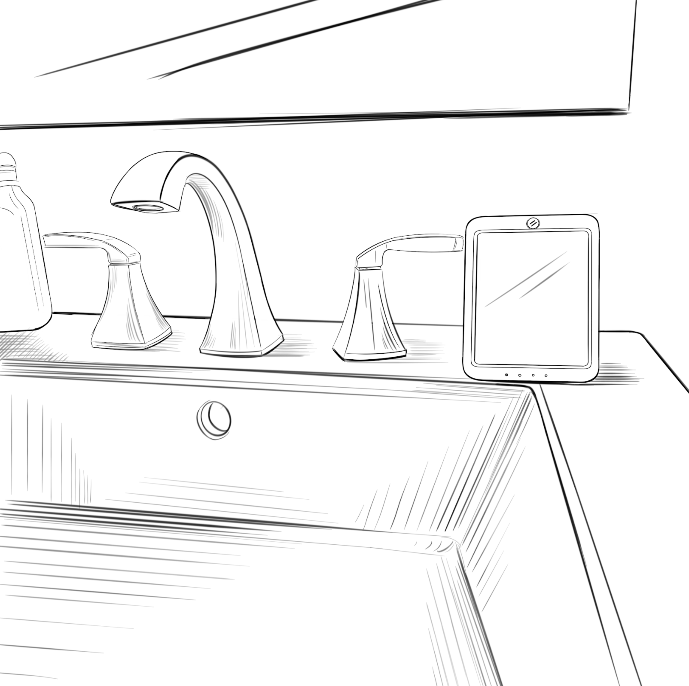

Portfolio
—

Python
Tensorflow
Smart Hand Washing Device (U.S. Patent Pending)
Tensorflow (2.0 & Lite), Keras, MFE, Spectogram
Engineering Student Machine Learning Enthusiast
Hi, I'm Milind
Education
4A Undergraduate Student Email mpaliath@uwaterloo.ca City San Jose, CA My SkillsLanguages Python C++ Java Swift HTML C Javascript SQL Tools Jupyter Notebook Tensorflow Sci-kit Learn PySpark Hadoop Plotly Grafana |
Around the webInterests |
I am in search of a full-time software developer role (with applications of ML). Let me know if you want me on your team!
View Résumé

Founded FTC team #9097 in 2014. In FTC, Teams are responsible for designing, building, and programming their robots in a 10-week build period to compete in an alliance format against other teams. My team and I have constructed and coded 5 robots in 4 years. Throughout those years, I have switched from software lead to hardware lead and teaching new members of the team. I am self-taught on the in's and out's of robotization.